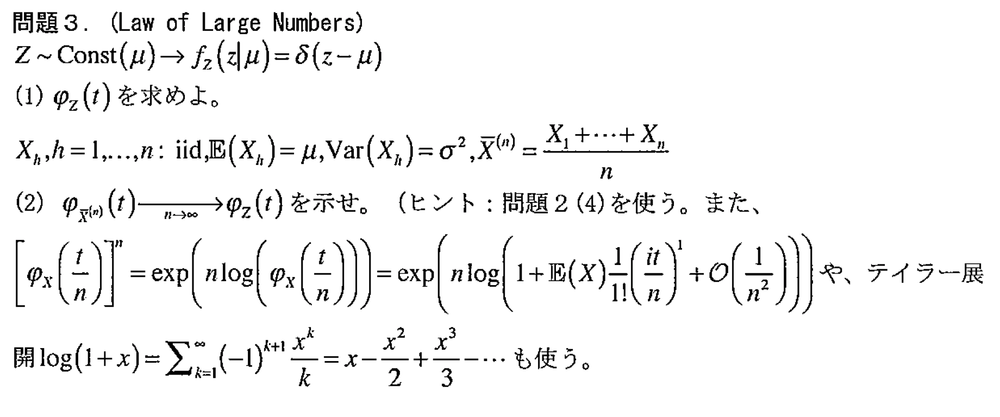
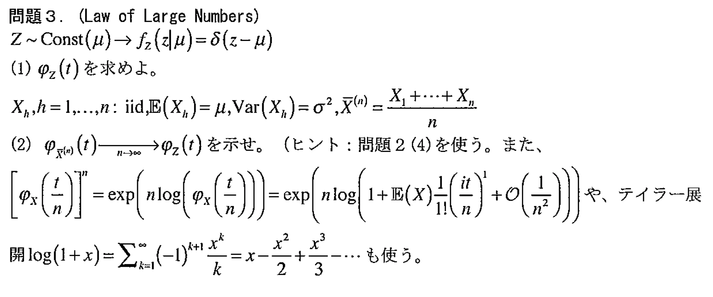
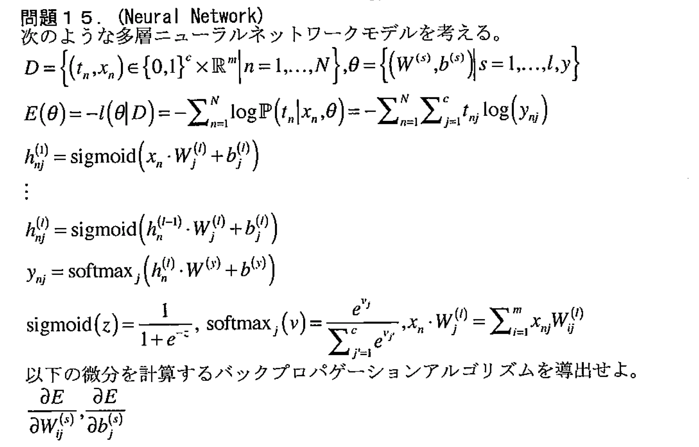
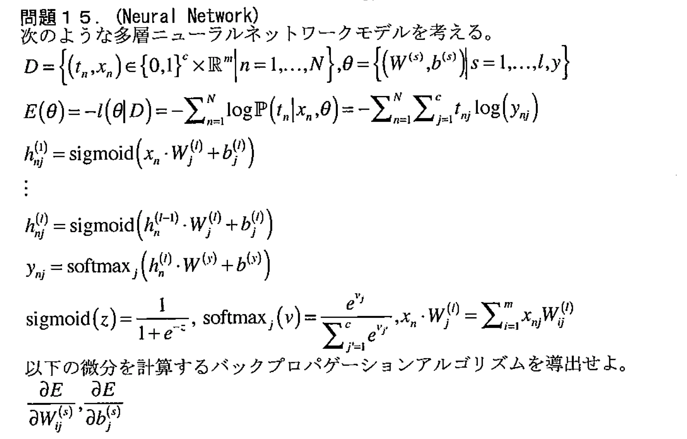

- 講師：木立 尚孝（生物データマイニング論も担当されている方）
計算演習
|#|リンク|問題|
|:-:|:-|:-:|
|1|Covariance| |
|2|Characteristic function|
|
|2|Characteristic function| |
|3|Law of Large Numbers||
|4|Exponential Distribution||
|5|Categorical Distribution||
|6|Multinomial Distribution||
|7|Positive Definite Symmetric Matrix|
|
|3|Law of Large Numbers||
|4|Exponential Distribution||
|5|Categorical Distribution||
|6|Multinomial Distribution||
|7|Positive Definite Symmetric Matrix| |
|8|Multivariate Normal Distribution||
|9|Kullback-Leibler Divergence|
|
|8|Multivariate Normal Distribution||
|9|Kullback-Leibler Divergence| |
|10|Expectation Maximization Algorithm||
|11|Data Assimilation||
|12|Order Statistics||
|13|Sparse Modeling||
|14|Brownian motion|
|
|10|Expectation Maximization Algorithm||
|11|Data Assimilation||
|12|Order Statistics||
|13|Sparse Modeling||
|14|Brownian motion| |
|15|Neural Network||
|
|15|Neural Network||